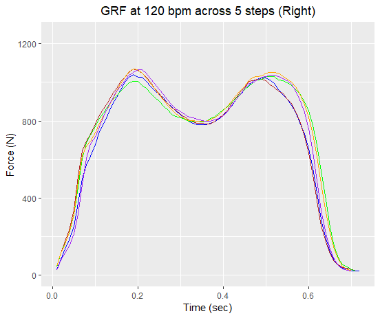
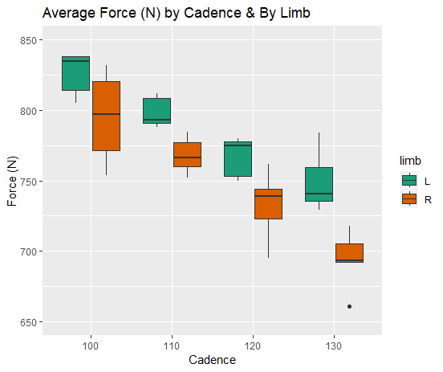
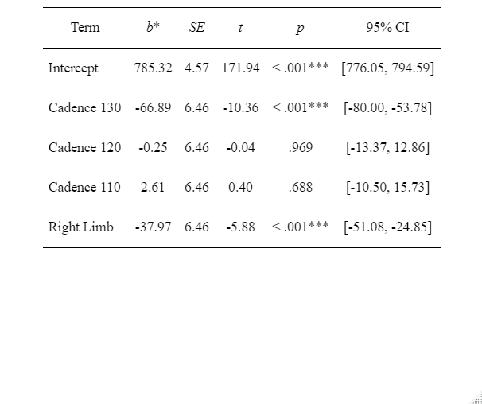

Cadence Analysis
My graduate research has been focused on step-rate based gait retraining. I conducted a preliminary experiment where I collected ground reaction force data using a wearable insole while walking at four different step rates.
First let's get some background and the theory behind this experiment.
Gait retraining is a common and effective method of treating chronic running related injuries. Step rate based gait retraining has also been used to manage pain with osteoarthritis and potentially decrease load through the knee.
For this project I walked at 2.2 miles per hour (an average for individuals with knee osteoarthritis) at 100, 110, 120, and 130 steps per minute (these will cover the majority of step rates adults will walk at).
The loadsol is a set of force sensors that go inside the shoe and record forces of 3 different regions of the foot (Heel, Midfoot, Forefoot). The model I used recorded from 1-100Hz, so I recorded at 100Hz (note that typically ground reaction force data from a forceplate is recorded at about 1000Hz).
If you've never seen ground reaction force data from walking before, below is a sample of 5 steps from this experiment. Two important metrics in gait analysis are initial contact and toe off, these define the start and end of a step. I found timepoints for initial contact and toe off by finding times in my data where the force went above and below a 20N threshold. I then selected 5 steps from each of the 4 conditions for further analysis. Here I will also note that I looked at each limb individually.
After my processing I was interested in how the force changed for each limb with each step rate condition. Here you will see that there is a decrease in force with each increasing cadence condition (which supports my initial thinking).
Based on the values above, I suspected that there may have been a difference between my limbs, even though the pattern was the same. Below you will see that there is a difference between limbs (I also performed a statistical analysis on these and found there to be a significant difference).
Up to this point, I have failed to convey some newly important information. I have a torn meniscus. My right meniscus had been torn but not surgically repaired for the two years prior to this experiment. This became more important as I was slightly underloading my mensicus limb.
This difference surprised me, so I became curious of an in interaction between cadence and limb. I hadn't thought about how using myself as a subject in this analysis would impact the results, but now I was able to look at how the variables interacted, and likely made myself a more accurate model for knee osteoarthritis (individuals with knee osteoarthritis have been shown to underload their affected limb while walking).
Lastly, I performed a linear regression analysis on the data. Here I performed a linear regression with Cadence of 100 and the Left leg as reference categories. Here I show that there is a significant difference based on limb and at the highest cadence. I also performed some post hoc analyses available in the markdown file that further support this and show the interaction between these variables.
This project was incredibly meaningful for me, both in terms of gaining experience collecting and analyzing data from wearable sensors, but also in reminding me that I should work to avoid long term deficits on my right leg.